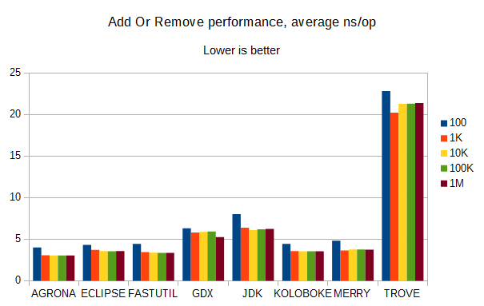

Here, we're comparing the performance of several collections libraries, including libGDX, on various operations on sets of String when run on JDK 8 (HotSpot).
Add:
Add Or Remove:
Add Then Remove:
Contains:
Remove:
Remove Then Add:
The main point to note is that libGDX's ObjectSet performs very well, except when it has to remove an item. Then, it's consistently near the worst performance of any of these collections libraries. For contains and add performance, it is excellent, with the caveat that inserting even a small amount (less than 50) of different items with the same hashCode() will crash it with an OutOfMemoryError. It also uses very little memory in most cases, but having too many similar keys can make it use over 60x more memory than normal.
In most other categories, everything except Trove performs well; Trove goes from having some redeeming qualities when run on Java 13 to being very, very, far in last place on several key benchmarks.
I'm pretty sure the version of Koloboke used isn't the latest, but the latest had some issues with needing a non-Maven-Central repo to get a closed-source annotation processor (these were suspicious, but may have been resolved). It seems to perform very competitively. Koloboke does not have the same range of collections as some other libraries.
Merry seems to perform fairly well considering how small the codebase is (it has fewer methods than libGDX's ObjectSet). Merry's ObjectSet is API-compatible with libGDX's ObjectSet, and it seems to be slower than libGDX by a small factor on most operations with String items, but twice as fast when it removes them. Merry is also designed to be robust against collisions or low-quality hashCode() implementations, and mixes hash codes quickly but generally well enough; FastUtil also mixes hash codes to improve resistance to bad implementations, and probably several other libraries mix in their own ways (libGDX tries, but won't resist cases with 50+ collisions). Merry is pretty consistently around second-place in most speed benchmarks, and it appears to be in first place regarding the efficiency of its memory usage.
FastUtil and Eclipse Collections do quite well but both require Java 8 or higher (several others in this list may also require this). FastUtil's unordered sets and maps have memory usage on-par with Merry, but its ordered ones use significantly more memory. Eclipse sets and maps may have good or bad memory usage; that test has yet to be run. Eclipse doesn't have ordered maps or sets.
Agrona has good performance on non-add methods, but on Java 8 it doesn't seem as fast on remove operations relative to Java 13; making it somewhat unremarkable overall, though I don't know much about it otherwise.
The JDK collections have the best performance on remove and generally good performance all-around, but as the libGDX developers discovered (and benchmarks confirm), they tend to be memory-hungry.
Thanks to user Art on the libGDX Discord for creating the charts, and GitHub user DiegoEliasCosta for making the benchmark project this used to measure the various libraries.